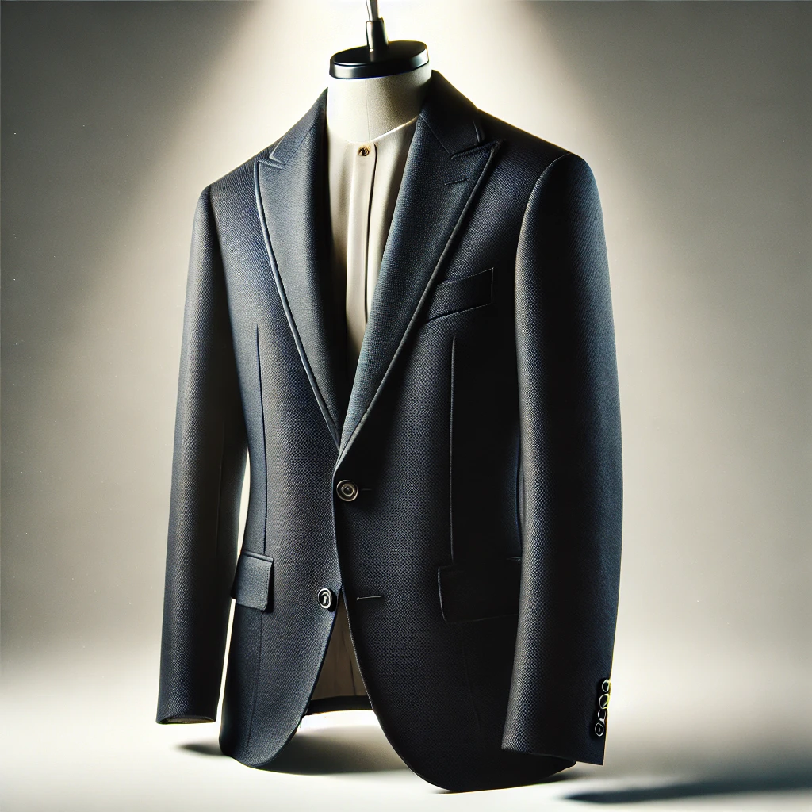

Blazer Clásico
Un blazer atemporal, hecho a medida para quienes valoran la sastrería clásica y la elegancia discreta.
Donde la elegancia es más que una apariencia, es un estilo de vida.
En Old Money Elegance, creemos que la verdadera elegancia es mucho más que seguir las últimas tendencias. Es un reflejo del respeto, la etiqueta y el buen gusto que trasciende el tiempo. Nuestra tienda está dedicada a proporcionar productos que no solo son sofisticados, sino que también representan la discreción y la clase. Porque la elegancia no se trata de llamar la atención, sino de dejar una impresión duradera a través de la sencillez y la calidad.
Cada prenda y accesorio que ofrecemos es una representación de ese estilo "old money" que simboliza una vida marcada por la herencia, el legado y el buen gusto. Aquí, la elegancia no es solo una apariencia, es una forma de vida.
Un blazer atemporal, hecho a medida para quienes valoran la sastrería clásica y la elegancia discreta.
El toque perfecto de sofisticación. Este pañuelo de seda refleja la verdadera esencia del estilo refinado.
Calzado que combina calidad y elegancia, diseñado para acompañarte en cualquier ocasión formal.